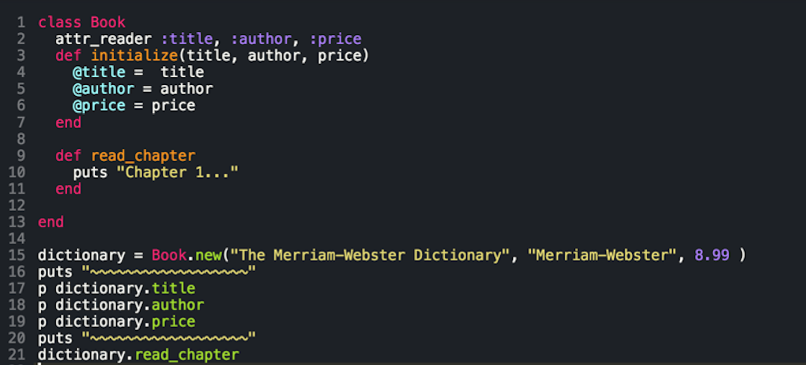
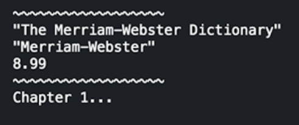

Now it is finally time to talk about creating new classes in Ruby!
Classes are great and ruby has plenty of built in classes already that make the language very robust.
Below I have created an example Class called Book which takes in 3 parameters: title, author, price. I have set 3 readable instance variables of the same name to correspond to each. There is also an example class method called read_chapter.
Now everytime you call Book.new and pass in the proper amount of parameters it will create a new instance of the Book Class (see line 15).
Since we set the instance varaible and attr readers we can call and read out the values (see line 17-19). Also you can call the read_chapter method on the instance of the class that we created and see that everything is outputting what it should be.
Below is the output examples
